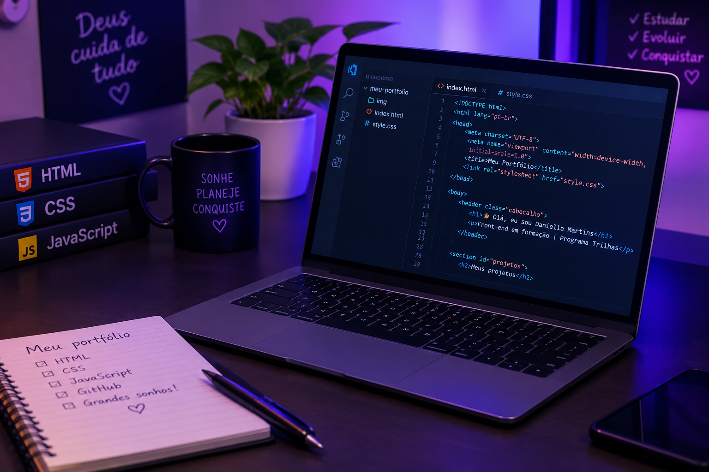

Sobre mim
Olá! Sou Daniella Martins, estudante de desenvolvimento Front-end pelo Programa Trilhas Inova Maranhão. Estou aprendendo a criar páginas web e desenvolvendo minhas habilidades em HTML, CSS e JavaScript.
Meus projetos

Meu portfólio pessoal
Este é meu primeiro projeto de desenvolvimento front-end, criado durante minha jornada de aprendizagem no Programa Trilhas. Desenvolvi meu próprio portfólio utilizando HTML, CSS e JavaScript, colocando em prática meus primeiros conhecimentos em programação.
Meus certificados
Sou estudante de desenvolvimento Front-end pelo Programa Trilhas Inova Maranhão 3a edição e estou aprendendo a criar páginas web com HTML e CSS.
Ver meus certificados